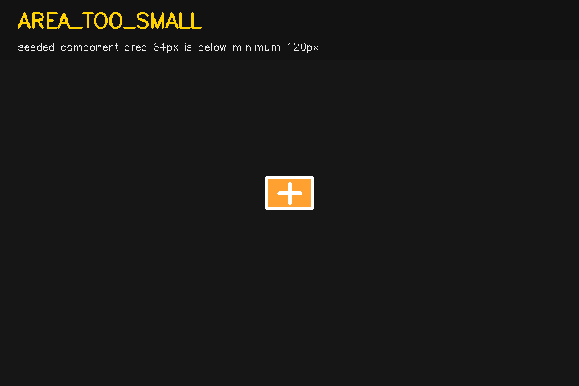
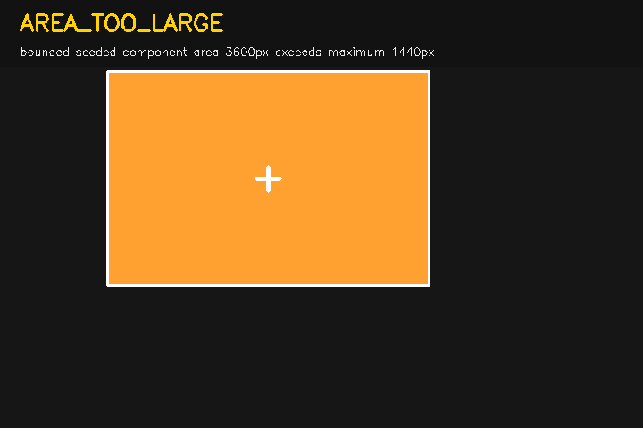
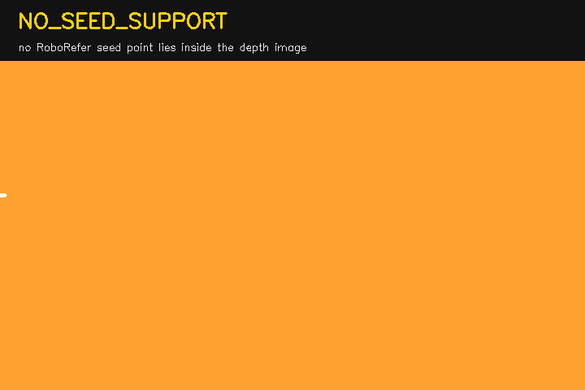
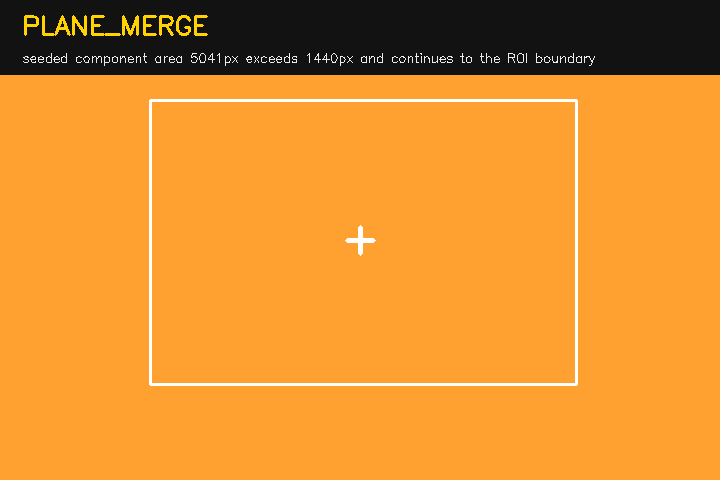
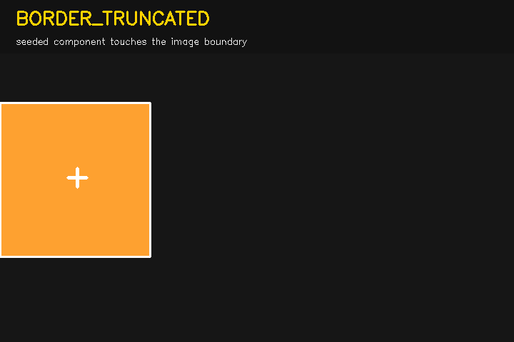
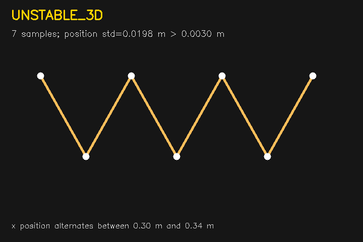

AREA_TOO_SMALL
Vung depth co seed nho hon dien tich toi thieu.
DEMO PASS: observed = expected

Vung depth co seed nho hon dien tich toi thieu.
DEMO PASS: observed = expected

Vung co seed qua lon nhung van nam gon trong ROI.
DEMO PASS: observed = expected

Khong co depth hop le / thanh phan lien thong do seed RoboRefer ho tro.
DEMO PASS: observed = expected

Vung qua lon va tiep tuc den bien ROI: dau hieu vat bi dinh voi mat phang.
DEMO PASS: observed = expected

Vung muc tieu cham bien anh, hinh dang co the bi cat mat.
DEMO PASS: observed = expected

Cua so diem 3D da du mau nhung dao dong vuot nguong.
DEMO PASS: observed = expected
Chi doc input da khoa; khong sua artifact va khong tinh lai diem pilot.
{
"accepted": false,
"reason_code": "PLANE_MERGE",
"detail": "seeded component area 39117px exceeds 36864px and continues to the ROI boundary",
"diagnostics": {
"input_shape": [
480,
640
],
"seed_points_xy_input": [
[
357,
66
]
],
"thresholds": {
"min_depth_m": 0.05,
"max_depth_m": 2.0,
"min_area_px": 120,
"max_area_fraction": 0.12,
"reject_border_truncated": false
},
"seed_points_xy_valid": [
[
357,
66
]
],
"valid_depth_pixels": 307200,
"seed_depth_m": 0.36822789907455444,
"roi_xyxy": [
247,
0,
467,
176
],
"max_area_px": 36864,
"foreground_component_count": 1,
"components": [
{
"label": 1,
"area_px": 39117,
"bbox_xyxy": [
247,
0,
467,
176
],
"seed_support_count": 1,
"distance_to_seed_px": 0.0,
"touches_image_border": true,
"touches_roi_boundary": true
}
],
"selected_component": {
"label": 1,
"area_px": 39117,
"bbox_xyxy": [
247,
0,
467,
176
],
"seed_support_count": 1,
"distance_to_seed_px": 0.0,
"touches_image_border": true,
"touches_roi_boundary": true
}
},
"scene_id": "pilot_scene_0007",
"seed_pixel_xy": [
357,
66
],
"interpretation": "POST_HOC_DIAGNOSTIC_ONLY",
"note": "Runs Gate v2 on locked inputs; it does not rewrite or rescore the frozen pilot."
}